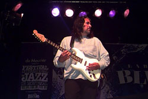
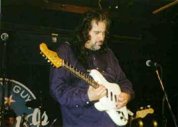
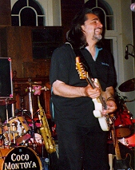

“Коко Монтойа. Это мой человек! Он стучал у меня 4 года на барабанах и я научил его как надо играть на гитаре. Он просто замеча-а-ательный гитарист!” - Альберт Коллинз“Коко Монтойа один из самых лучших блюзовых гитаристов, которых Вам когда-либо приходилось слышать!” - Джон Мэйалл.
После выхода дебютного альбома “Gotta mind to travel” о Коко Монтойа стали говорить как о талантливом гитаристе и вокалисте, как о “новом имени” в блюзе, но истинный ценитель блюза сказал бы куда больше. Продолжительная игра этого молодого гитариста, вначале, вместе с величайшим мастером телекастера блюзмэном Альбертом Коллинзом, а потом и с ветераном британского блюза Джоном Мэйаллом, дала ему огромный опыт и широкую возможность укрепиться и развиться как неординарному самостоятельному музыканту и отточить свой собственный “голос”.
Прежде чем Коко начал ковырять ноты на гитаре, основным инструментом его были ударные. “Я вырос, - говорит Коко Монтойя, играя рок и рок`н`ролл в университете, и обычно подрабатывая игрой на ударных в различных небольших группах Лос Анжелеса. Но однажды, я пришёл на концерт “Кридэнс” и “Айрон батэрфляй”. Альберт Кинг играл в перерыве между этими группами и я прежде никогда не слышал его. Когда он закончил выступление, мир как-будто перевернулся для меня. Его игра заставила меня пересмотреть свой взгляд на музыку вцелом и то, как надо действительно играть на гитаре. Теперь я знал - это то, что буду делать я”.

Другой поворотный момент в его жизни произошёл, когда в 1972 году Монтойя играл на ударных в маленьком клубе городка Кулвер. Альберт Коллинз знал владельца этого клуба и как-то выступил с субботним концертом. “Владелец сказал, что Альберт может использовать какое угодно оборудование и инструменты. Поэтому, вернувшись и решив поиграть на барабанах я обнаружил что всё не так, как я оставлял накануне и привык играть сам. Я был страшно разозлён и устроил целую бучу по этому поводу. Позже, в этот же день, мне позвонил Альберт с извинениями. Мне было так приятно, что я сказал ему, чтобы он не беспокоился. Когда я в следующий раз опять услышал его - это было грандиозно и я решил, что буду таким же, чего бы это мне не стоило! Альберт даже дал мне сыграть партию в одной из своих песен. Через несколько месяцев Коллинз позвонил мне и спросил, не соглашусь ли я выступить с ним пару недель в Орегоне и Вашингтоне. Сперепугу я сразу согласился. Расчитывая немного порепетировать, я спросил его, когда мы отправляемся и, услышав, что надо выезжать через три часа, опять испугался, потому что в действительности не играл блюз, но Альберту сейчас был необходим ударник. Позже я сказал ему, что хотя мне и безумно нравится его музыка, если он решит меня сменить в группе, то я смогу это понять. На что он ответил мне, что если я хочу играть блюз и готов присоединиться к его команде в качестве постоянного музыканта, он научит меня”. Это произошло во время того, как Коко начал играть на гитаре, и Коллинз стал его учителем и наставником, научив его всему, что умел сам.
“Когда, в 1980 году я играл на гитаре в ночном клубе, как-то Джон Мэйалл зашёл отметить свой день рождения, и, узнав об этом, я сделал в его честь All Your Love в “безумном” исполнении. Когда чуть позже Джон позвонил мне и спросил, не откажусь ли я войти в его вновь обновленный состав Блюзбрэкерс, я был абсолютно уверен, что какой-то из моих английских друзей решил пошутить и со злости повесил трубку. К счастью он перезвонил мне ещё раз и сказал, что это действительно Джон Мэйалл и тогда я понял, что нельзя упустить шанс играть с таким легендарным музыкантом и я согласился и присоединился к нему на десять лет. Мы играли везде. Прогресс моей игры на гитаре был заметен даже мне, хотя бы от самого осознания игры в такой великой группе, да ещё и на месте Эрика Клэптона, Питера Грина и Мика Тэйлора. Джон всегда хотел, чтобы мы импровизировали каждый раз и не повторялись. Я научился у Джона очень многому”.В составе Блюзбрэкерс Коко объехал пол-мира в турне по Северной и Южной Америке , Европе и Австралии, играл на таких престижных фестивалях, как Монтеррей, Новоорлеанский джазовый, на блюзовом фестивале в Сан-Франциско. В этот период были выпущены такие записи, как “Behind the Iron Curtain”, “The Power of Blues”, “Chicago Line”, “A sense of Place” и “Wake Up Call”. Также он участвовал в проекте Альберта Коллинза “Collins Mix”.
Настоящий состав группы Коко составляют Джо Юэль - ударный (экс-Блюзбэкерс), Дебби Дэвис - ритм гитара и вокал (экс-гитаристка в составе группы Альберта Коллинза), Альберт Молинаро - басс гитара и Майк Финнеган - хаммонд орган.
В гитаре Монтойа отчётливо слышится игра Коллинза, манера Джона Мэйалла, лёгкость Би Би Кинга. Это не традиционный блюз, а несколько с уклоном в “попсовость” и поэтому доступен для широкого круга слушателей.
Перевод Михаила Багатурова.
Coco Montoya. Темпераментный наследник Альберта Коллинза - статья Евгения Долгих. Перепечатана из журнала Jazz-квадрат.